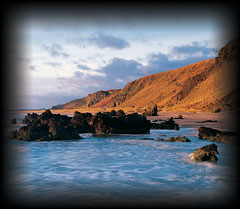

|
|
A greyhound sejant Proper, gorged with an antique crown Or
Cursum perficio (I accomplish the hunt)
The Arms of Hunter of Hunterston in the hoist and of two tracts Or and Vert, upon which is depicted the Crest three times along with the Motto ‘Cursum perficio’ in letters Or upon two transverse bands Gules
Two greyhounds Proper, gorged with antique crowns Or
Or, three hunting horns Vert, garnished and stringed Gules
|
| At Hunterston in Ayrshire is carefully
preserved on a frail parchment a charter signed by Robert II on 2 May
1374, confirming the grant of land to William Hunter ‘for his faithful
service rendered and to be rendered to us in return for a silver penny
payable to the Sovereign at Hunterston on the Feast of Pentecost’.
To this day the Laird of Hunterston keeps silver pennies, minted in the
reigns of Robert II and George V, in case of a royal visit to the district
on the day appointed for the payment of his rent. William Hunter, who
received this charter, is reckoned the tenth Hunter of Hunterston. In
even earlier records, William and Norman Hunter appear using the Latin
form of the name, ‘Venator’. In even earlier records, William
and Norman Hunter appear using the Latin form of the name, ‘Venator’.
Aylmer le Hunter of the county of Ayr signed the Ragman Roll in 1296 as
one of the nobles of Scotland submitting to Edward I of England.
By the fifteenth century the Hunters were hereditary keepers of the
royal forests of Arran and the Little Cumbrae. It appears that they
held this office from an early date, and the family claims a long descent
from the holders of similar offices in England and Normandy before coming
to Scotland. By tradition, an ancestor of the Hunters was with Rollo,
the Viking, at the sack of Paris in 896, and was later appointed one
of the huntsmen to Rollo’s descendants, the Dukes of Normandy.
The Hunters followed William the Conqueror’s queen, Matilda, to
England, and because of this their names are not included in the list
of the companions of the Conqueror. The Hunter’s wife was lady-in-waiting
to Queen Matilda, and presumably had a hand in making the famous Bayeux
Tapestry. It seems likely that the family came to Scotland early in
the twelfth century at the invitation of David I, who was brought up
with his sister at the Norman court in England, and were given the In
the sixteenth century the service to be rendered by the Hunters became
chiefly military. John, the fourteenth Laird, died with his king at
Flodden. His son, Robert, was ‘trublit with sikness and infirmity’,
and in 1542 was excused from army service by James V provided he send
in his place his eldest son and his tenant. His son, Mungo, succeeded
his father in 1546, but was killed the following year at the Battle
of Pinkie. In succeeding generations the Hunters became peaceful Lairds,
tending their estates and looking after their tenants. Cadet branches
of the family, as was the custom, made their own way in the world as
soldiers or in the professions. Robert, son of the twentieth Laird,
graduated at Glasgow University in 1643. He was minister of West Kilbride,
where he bought land and so founded the Hunters of Kirkland. Robert,
a grandson of the twentieth Laird, served under Marlborough and became
Governor of Virginia and then of New York.
|
|
|
|
|
|
|
| Protect and proclaim your
Scottish heritage with a Clan Hunter Tartan Card™.
Click
here to apply now for your Tartan Card™, or call this
number 1 866 GET MBNA (1 866 438 6262) to apply for your Tartan
Card™ and mention priority code KY7P
Find out more at: www.tartancard.com |
|
|
|
|
The early eighteenth century brought financial problems for the family.
These were resolved by Robert Hunter, a younger son of the twenty-second
Laird, who succeeded to the estate and managed it with such vigour and
accomplishment that it has been said that he may be viewed as a second
founder of his ancient family. He was considerate of his tenants, often
remarking that they had held their occupancies from as early a period
as he did himself. He died at the age of 86 and was succeeded by his
daughter, Eleanora. She married her cousin, Robert Caldwell, a wealthy
merchant and banker. He assumed the name Hunter, and together they began
extensive improvements to the estate. They built the present Hunterston
House, a fine example of late-eighteenth-century architecture. Their
son altered and extended the house in 1835. He had two daughters: Jane,
who married Gould Weston, and Eleanor, who married Robert William Cochran-Patrick.
Jane Hunter Weston died in 1911 to be succeeded by her son, Lieutenant
General Sir Aylmer Hunter- Weston, a distinguished soldier. He served
on Kitchener’s staff in the Egyptian War of 1896, then in the Boer
War and later as divisional officer to Sir John French, commander of
the British Expeditionary Force in France from 1914 to 1915. In the
First World War he was in the Gallipoli landings, and later commanded
the 8th Army on the Western Front. He was awarded many decorations and
honours, including the Distinguished Service Order and a Knighthood
of the Bath. He served as MP for North Ayrshire and Bute for twenty-seven
years, and commissioned the great architect, Sir Robert Lorimer, to
restore the old Castle of Hunterston. He died in 1940 without issue,
and on the death of his widow in 1954 the estate passed to the descendants
of his mother’s younger sister. Eleanora, granddaughter of Eleanora
Hunter and Robert William Cochran-Patrick, and daughter of Sir Neil
Kennedy Cochran-Patrick, succeeded, adopting the style, ‘Miss Hunter
of Hunter-ston’. In 1969 she passed the estate to her nephew, Neil,
who was officially recognised by the Lord Lyon as twenty-ninth Laird
and chief. Prior to his death in 1994, he had nominated by tanistry
his eldest child, Pauline, to succeed him as chief; she has now been
recognised in this position by the Lord Lyon.

|
|
|